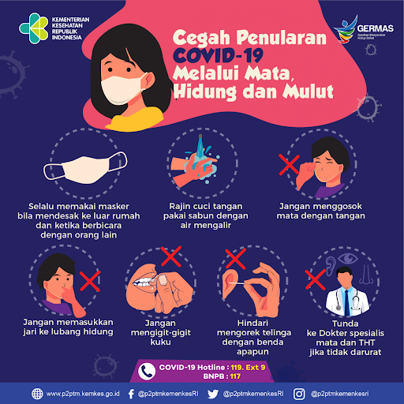

Sendy Dwi Kurniawan
Home
Pencegahan
Data dan Statistik
Kuis
Kontak
Home
Web ini dibuat mengetahui pencegahan,data dan statistik covid-19
Pencegahan COVID-19

Data dan Statistik
EDU COVID
Kuis
1) Berapa lama masa inkubasi Covid-19?
a)14 hari
b)10 hari
c)8 hari>
d)5 hari
2) Pertama kali covid ada di negara?
a)Indonesia
b)USA
c)China
d)Germany
3) Manakah cara cegah covid yang benar?
a)menjaga jarak
b)Berdekatan
c)tidak menggunakan masker
d)saling bersalaman
4) agar imunne nya tetap stabil harus ?
a)makanan sehat
b)berolahraga
c)positive thinking
d)semua jawaban benar
5) tanggal berapa covid pertama kali ada di indonesia ?
a)14 maret
b)10 maret
c)8 maret
d)6 maret
Copyright © 2021 - SendyDwiKurniawan.